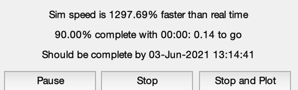
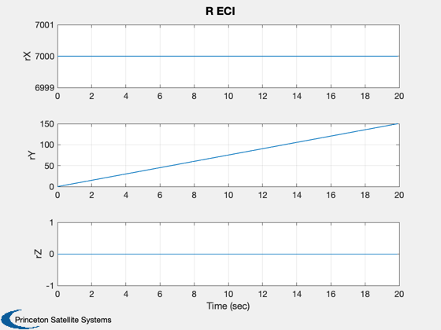
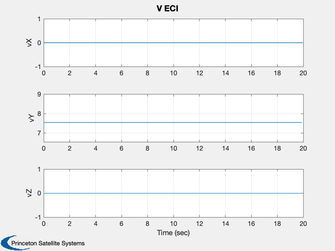
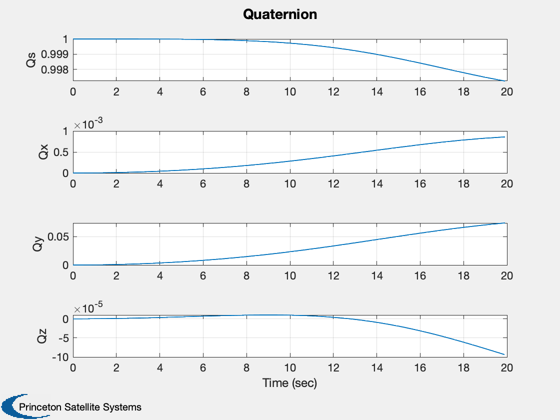
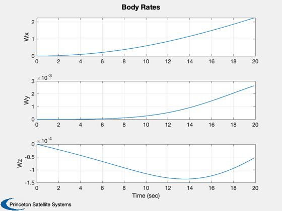
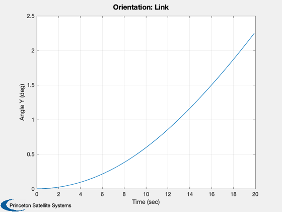
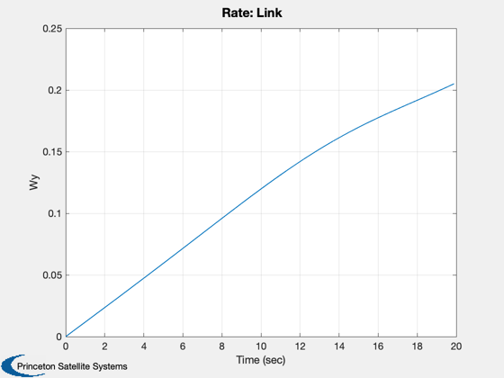
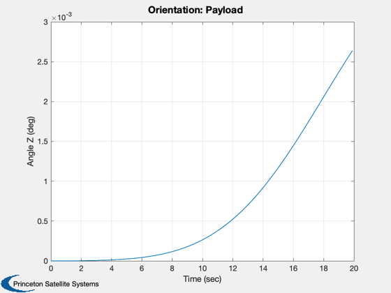
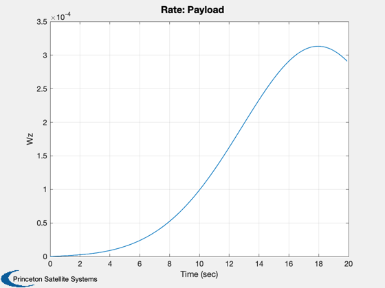
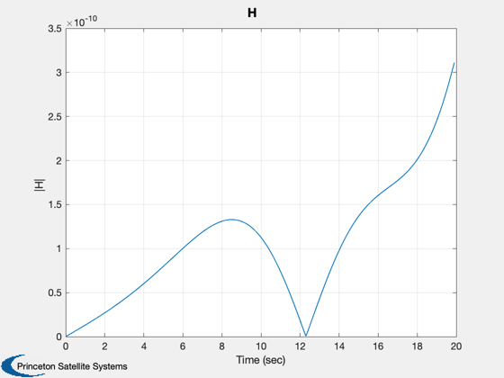

Three body simulation. The bodies are connected
1 - y DOF - 2 - zDOF - 3
Overall there are 5 dof.
See TreeCAD.m for a demonstration of how to use Tree with the CAD
functions.
Since version 2.
------------------------------------------------------------------------
See also TimeGUI, Mag, RK4, TreeAdd, TreeH, TreeInit, TreePlot, TreePrnt
------------------------------------------------------------------------
Contents
Global for the time GUI
global simulationAction
simulationAction = ' ';
clear body;
Vectors from previous body reference to the hinge of the body
lambda1 = [0;0;0];
lambda2 = [2;0;0];
lambda3 = [1;0;0];
the reference is always the hinge that leads to the core
r1 = [0;0;0];
r2 = [0;0.5;0];
r3 = [0;0;0.5];
Mass and inertia
m1 = 100;
m2 = 2;
m3 = 5;
i1 = diag([200 200 300]);
i2 = diag([ 1 1 1]);
i3 = diag([ 3 3 1]);
Add each body to the tree data structure
body(1) = TreeAdd( i1, r1, lambda1, m1, 0, 0, [], [], [], [], [], 'Core' );
body(2) = TreeAdd( i2, r2, lambda2, m2, 1, 2, [], [], [], [], [], 'Link' );
body(3) = TreeAdd( i3, r3, lambda3, m3, 2, 3, [], [], [], [], [], 'Payload' );
Internal torque
body(2).torque = 0.1;
Initial orbit
r = [7000;0;0];
v = [0;sqrt(3.98600436e5/7000);0];
Initialize the multibody tree
[treeDS, x] = TreeInit( body, r, v );
Print out the tree
TreePrnt( body, treeDS );
-----------------------------------------------------------------------
Body 1: Core
-----------------------------------------------------------------------
Inertia = 200.0000 0.0000 0.0000
0.0000 200.0000 0.0000
0.0000 0.0000 300.0000
Mass = 100.0000
CM Location = 0.0000 0.0000 0.0000
Vector to Hinge = 0.0000 0.0000 0.0000
Previous Body = None
Degree of Freedom = 0
Torque about CM = 0.0000 0.0000 0.0000
Force at CM = 0.0000 0.0000 0.0000
Hinge spring stiffness = 0.0000 0.0000 0.0000
Hinge spring damping = 0.0000 0.0000 0.0000
Constant Alignment = 1.0000 0.0000 0.0000
Matrix 0.0000 1.0000 0.0000
0.0000 0.0000 1.0000
-----------------------------------------------------------------------
Body 2: Link
-----------------------------------------------------------------------
Inertia = 1.0000 0.0000 0.0000
0.0000 1.0000 0.0000
0.0000 0.0000 1.0000
Mass = 2.0000
CM Location = 0.0000 0.5000 0.0000
Vector to Hinge = 2.0000 0.0000 0.0000
Previous Body = 1 Core
Degree of Freedom = 2
Torque about CM = 0.1000 Force at CM = 0.0000 0.0000 0.0000
Hinge spring stiffness = 0.0000 Hinge spring damping = 0.0000 Constant Alignment = 1.0000 0.0000 0.0000
Matrix 0.0000 1.0000 0.0000
0.0000 0.0000 1.0000
-----------------------------------------------------------------------
Body 3: Payload
-----------------------------------------------------------------------
Inertia = 3.0000 0.0000 0.0000
0.0000 3.0000 0.0000
0.0000 0.0000 1.0000
Mass = 5.0000
CM Location = 0.0000 0.0000 0.5000
Vector to Hinge = 1.0000 0.0000 0.0000
Previous Body = 2 Link
Degree of Freedom = 3
Torque about CM = 0.0000 Force at CM = 0.0000 0.0000 0.0000
Hinge spring stiffness = 0.0000 Hinge spring damping = 0.0000 Constant Alignment = 1.0000 0.0000 0.0000
Matrix 0.0000 1.0000 0.0000
0.0000 0.0000 1.0000
-----------------------------------------------------------------------
Tree Properties
-----------------------------------------------------------------------
Gravity gradient off
-----------------------------------------------------------------------
Mass = 107.0000
-----------------------------------------------------------------------
Active degrees of freedom = 5
-----------------------------------------------------------------------
Reduced mass matrix
6.5421e-02
-1.8692e-02
-4.6729e-02
-9.3458e-01
9.8131e-01
-4.6729e-02
-9.3458e-01
-1.8692e-02
9.5327e-01
-----------------------------------------------------------------------
Paths to Core
-------------
Body 1
1
Body 2
2
1
Body 3
3
2
1
-----------------------------------------------------------------------
Bodies in aggregates
--------------------
Aggregate 1
1
2
3
Aggregate 2
2
3
Aggregate 3
3
-----------------------------------------------------------------------
Plotting and initialization
tSim = 20;
dTSim = 0.1;
nSim = floor(tSim/dTSim);
hPlot = zeros(1,nSim);
tPlot = zeros(1,nSim);
xPlot = zeros(length(x),nSim);
t = 0;
Initialize the time display
[ ratioRealTime, tToGoMem ] = TimeGUI( nSim, 0, [], 0, dTSim, 'Tree Sim' );
Run the simulation
for k = 1:nSim
[ ratioRealTime, tToGoMem ] = TimeGUI( nSim, k, tToGoMem, ratioRealTime, dTSim );
hPlot(k) = Mag( TreeH( x, t, treeDS, body ) );
xPlot(:,k) = x;
tPlot(k) = t;
x = RK4( 'Tree', x, dTSim, t, treeDS, body );
t = t + dTSim;
switch simulationAction
case 'pause'
pause
simulationAction = ' ';
case 'stop'
return;
case 'plot'
break;
end
end
TreePlot( tPlot, xPlot, treeDS, body, hPlot )
Max Momentum Error = 3.1148e-10 Nms
         